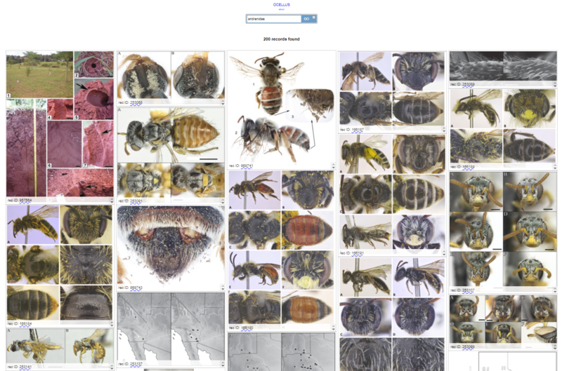

Plazi and BLR receive €1.1 million from Arcadia to open up new biodiversity data

Visual search results from the Biodiversity Literature Repository. Each of the images provides access to the taxonomic treatment of the species or the source article. Only figures from scholarly publications are provided.
Plazi has received a grant of EUR 1.1 million from Arcadia – the charitable fund of Lisbet Rausing and Peter Baldwin – to liberate data, such as taxonomic treatments and images, trapped in scholarly biodiversity publications.
The project will expand the existing corpus of the Biodiversity Literature Repository (BLR), a joint venture of Plazi and Pensoft, hosted on Zenodo at CERN. The project aims to add hundreds of thousands of figures and taxonomic treatments extracted from publications, and further develop and hone the tools to search through the corpus.
The BLR is an open science community platform to make the data contained in scholarly publications findable, accessible, interoperable and reusable (FAIR). BLR is hosted on Zenodo, the open science repository at CERN, and maintained by the Switzerland-based Plazi association and the open access publisher Pensoft.
In its short existence, BLR has already grown to a considerate size: 35,000+ articles have been added, and extracted from 600+ journals. From these articles, more than 180,000 images have also been extracted and uploaded to BLR, and 225,000+ sub-article components, including biological names, taxonomic treatments or equivalent defined blocks of text have been deposited at Plazi’s TreatmentBank. Additionally, over a million bibliographic references have been extracted and added to Refbank.
The articles, images and all other sub-article elements are fully FAIR compliant and citable. In case an article is behind a paywall, a user can still access its underlying metadata, the link to the original article, and use the DOI assigned to it by BLR for persistent citation.
“Generally speaking, scientific illustrations and taxonomic treatments, such as species descriptions, are one of the best kept ‘secrets’ in science as they are neither indexed, nor are they citable or accessible. At best, they are implicitly referenced,” said Donat Agosti, president of Plazi. “Meanwhile, their value is undisputed, as shown by the huge effort to create them in standard, comparative ways. From day one, our project has been an eye-opener and a catalyst for the open science scene,” he concluded. Though the target scientific domain is biodiversity, the Plazi workflow and tools are open source and can be applied to other domains – being a catalyst is one of the project’s goals.
While access to biodiversity images has already proven useful to scientists, but also inspirational to artists, for example, the people behind Plazi are certain that such a well-documented, machine-readable interface is sure to lead to many more innovative uses.
To promote BLR’s approach to make these important data accessible, Plazi seeks collaborations with the community and publishers, to remove hurdles in liberating the data contained in scholarly publications and make them FAIR.
The robust legal aspects of the project are a core basis of BLR’s operation. By extracting the non-copyrightable elements from the publications and making them findable, accessible and re-usable for free, the initiative drives the move beyond the PDF and HTML formats to structured data.
source: Eurekalert!
Links: